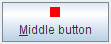

Respuestas: Realización de Pintado Personalizado
Preguntas
Pregunta 1. ¿Qué método definido por JComponent pinta el interior de un componente?
Respuesta 1: El método paintComponent pinta el interior de un componente (con la excepción
de cualquier hijo que contenga).
Pregunta 2. ¿Cuál de los trozos de código siguiente pintan un rectángulo (relleno o no) que sea de 100x100 pixels?
a. g.fillRect(x, y, 100, 100)
b. g.fillRect(x, y, 99, 99)
c. g.drawRect(x, y, 100, 100)
d. b and c
e. a and c
Respuesta 2: a. El método drawRect pinta líneas justo debajo del rectángulo especificado.
Así que para obtener un rectángulo 100x100, necesita especificar un ancho y alto de 99, 99 a
drawRect. Para los métodos fillXxx, por otro lado, especifique exactamente
el ancho y alto deseado, así que g.fillRect(x, y, 100, 100) resulta en un rectángulo 100x100.
Pregunta 3. ¿Qué código usaría para hacer que un componente realize la próxima operación de pintado
usando el color de fondo al 50% de transparencia?
Respuesta 3:
g2d.setComposite(AlphaComposite.getInstance(AlphaComposite.SRC_OVER, 0.5f));
Ejercicios
Ejercicio 1. Usando un borde estándar y un pintado de componente personalizado, implemente un componente
que tiene un tamaño preferido de 250x100, es opaco por defecto, tiene un borde negro de 5 pixel, y pinta una
"X" (usando líneas de 5 píxeles de grosor) en el color de primer plano, como se muestra en la figura
siguiente.

Respuesta 1: Vea
XMarksTheSpot.java
, el cual puede ejecutar usando
ComponentDisplayer.java
.
Aquí está el código que establece el borde del componente XMarksTheSpot:
setBorder(BorderFactory.createMatteBorder(5,5,5,5, Color.BLACK));
Aquí está el código de X-drawing desde el método paintComponent de XMarksTheSpot:
Graphics2D g2 = (Graphics2D)g;
Insets insets = getInsets();
g2.setStroke(new BasicStroke(5.0f));
g2.draw(new Line2D.Double(insets.left,
insets.top,
getWidth() - insets.right,
getHeight() - insets.bottom));
g2.draw(new Line2D.Double(insets.left,
getHeight() - insets.bottom,
getWidth() - insets.right,
insets.top));
Ejercicio 2. Implemente un icono que es de 10x10 pixels y pinte un rectángulo sólido que rellene el área
de 10x10. Si el componente del icono está habilitado, el rectángulo será rojo, si está deshabilitado, gris.
Haga una copia de ButtonDemo.java que usa su Icon personalizado para el botón del
medio, en vez de mostrar middle.gif. Las fotos siguientes muestran como debería verse el icono.
|  |
|
Respuesta 2: Vea
SquareIcon.java
, el cual puede ejecutar usando este
ButtonDemo.java modificado.
Aquí está el código que establece el icono:
Icon middleButtonIcon = new SquareIcon();
...
b2 = new JButton("Middle button", middleButtonIcon);
Aquí está la implementación de SquareIcon de los tres métodos requeridos por el interfaz
Icon:
public void paintIcon(Component c, Graphics g,
int x, int y) {
if (c.isEnabled()) {
g.setColor(Color.RED);
} else {
g.setColor(Color.GRAY);
}
g.fillRect(x, y, SIZE, SIZE);
}
public int getIconWidth() {
return SIZE;
}
public int getIconHeight() {
return SIZE;
}
Ejercicio 3. Implemente un borde que pinte una franja roja de 15 píxeles de alto en toda la parte
superior de su componente. Compruebe este borde substituyéndolo por el borde del componente que creó en el
ejercicio 1. El resultado debería vers como la figura siguiente.

Respuesta 3: Vea
StripeBorder.java
, el cual puede ejecutar usando
ComponentDisplayer.java
y
XMarksTheSpot.java
(asegúrese de descomentar la línea que establece el borde a StripeBorder). Aquí está la
implementación de StripeBorder de los tres métodos requeridos por el interfaz Border:
public void paintBorder(Component c, Graphics g,
int x, int y,
int width, int height) {
g.setColor(Color.RED);
g.fillRect(x, y, c.getWidth(), HEIGHT);
}
public Insets getBorderInsets(Component c) {
return new Insets(HEIGHT, 0, 0, 0);
}
public boolean isBorderOpaque() {
return true;
}